Discrete Simulation
iteration.RdSolver function to simulate discrete ecological (or other) dynamic
models. It is normally called indirectly from sim.
Arguments
- y
the initial values for the system. If
yhas a name attribute, the names will be used to label the output matrix.- times
times at which explicit estimates for
yare desired. The first value intimesmust be the initial time.- func
a user-supplied function that computes the values of the next time step (not the derivatives !!!) in the system (the model defininition) at time t. The user-supplied function
funcmust be called as:yprime = func(t, y, parms).tis the current time point in the integration,yis the current estimate of the variables in the ode system, andparmsis a vector of parameters (which may have a names attribute, desirable in a large system).The return value of func should be a list, whose first element is a vector containing the derivatives of
ywith respect totime, and whose second element is a vector (possibly with anamesattribute) of global values that are required at each point intimes.- parms
vector or list holding the parameters used in
functhat should be modifiable without rewriting the function.- animate
Animation during the simulation (if available for the specified class.
- ...
optional arguments passed to the
plotfunction ifanimate=TRUE.
Details
The solver method iteration is used to simulate discrete event
models. Normally, this function is run indirectly from
sim.
In contrast to differential equation solvers, the main function
of the model must not return the first derivative but instead and
explicitly the new state at the specified times.
The actual value of time is available in the main function as
time and the current increment as parms["DELTAT"] or
parms$DELTAT. It is element of a vector if parms is a
vector and it is a list if parms is a list.
If iteration is used for difference equations (see example
dlogist below), it is mandatory to multiply the incremental
part with DELTAT to ensure that variable time steps are
correctly respected and that the first row of the simulation outputs
contains the states at \(t_0\).
The default iteration method of class simObj supports
the observer mechanism. This means that a function stored in
slot observer is called during each iteration step with the
return value of main as its first argument. You can use this to
control the amount of data stored during each iteration step
(e.g. whole population or only mean values for individual based
models), to do run-time animation or to write log files.
As an alternative for models of class odeModel, the
iteration method of package deSolve may be used as a
user-defined solver function. This is slightly faster and the output
supports the extended plotting functions, but then no observers are
possible and no implicit DELTAT variable.
Examples
data(conway)
# \donttest{
## plot after simulation:
plot(sim(conway), delay=100)
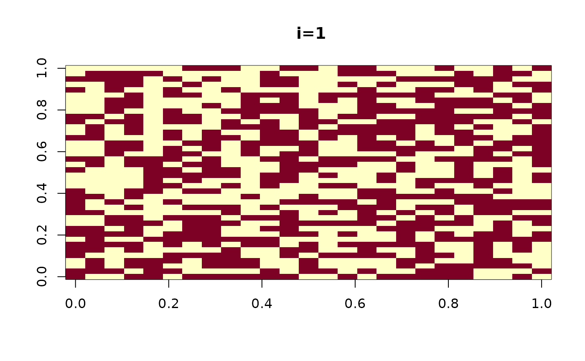


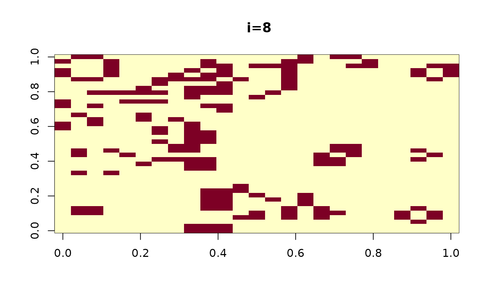
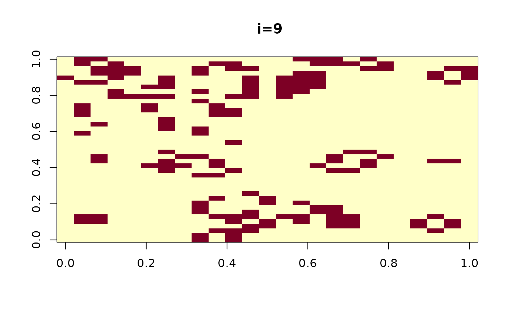

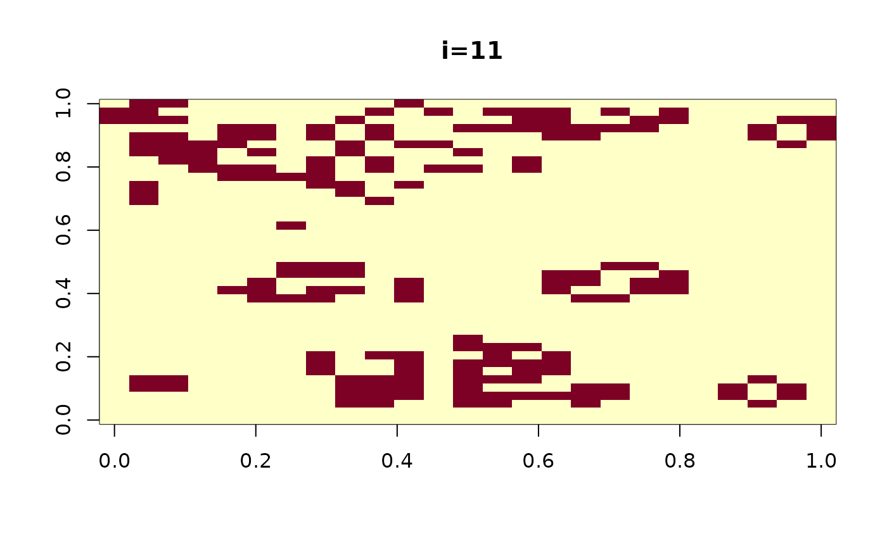


 ## plot during simulation
sim(conway, animate=TRUE, delay=100)
## plot during simulation
sim(conway, animate=TRUE, delay=100)
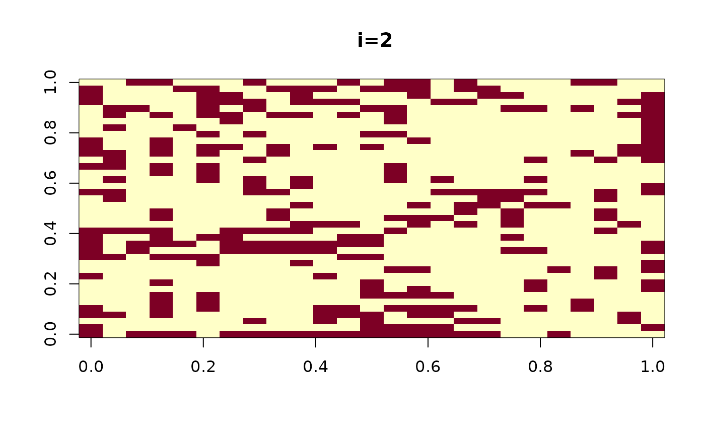

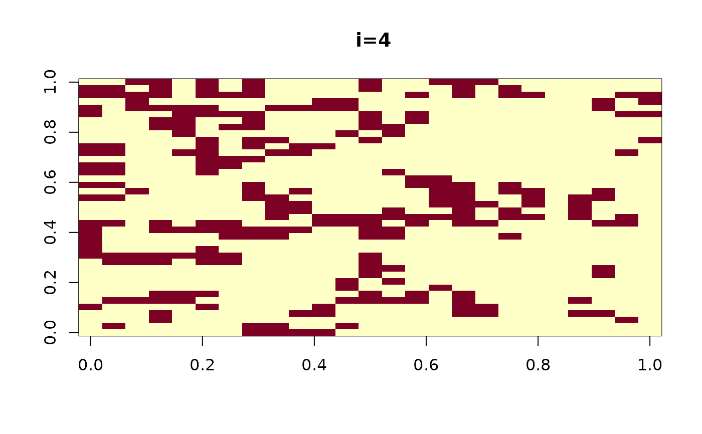
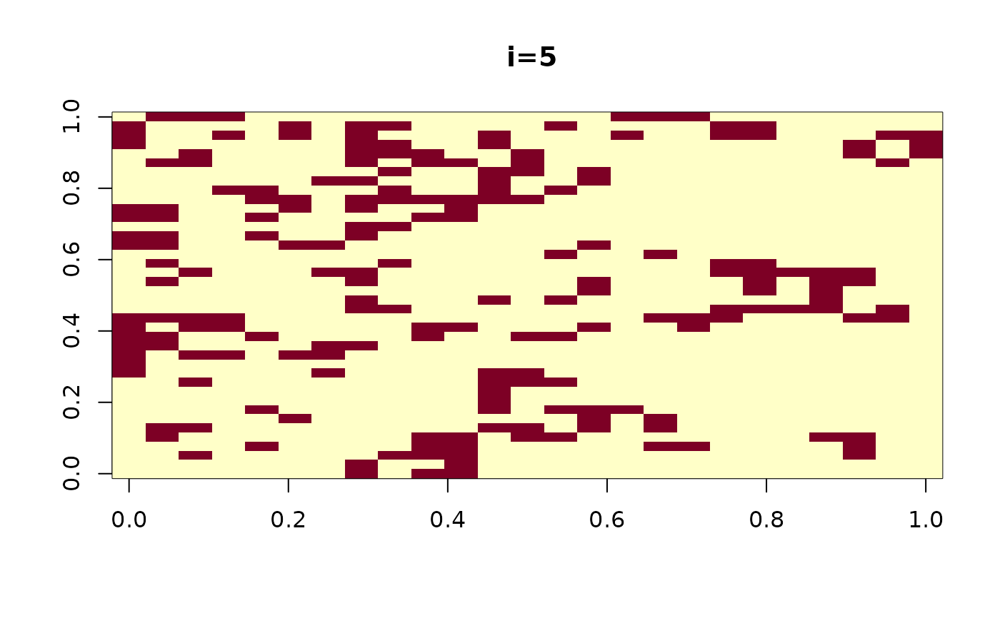
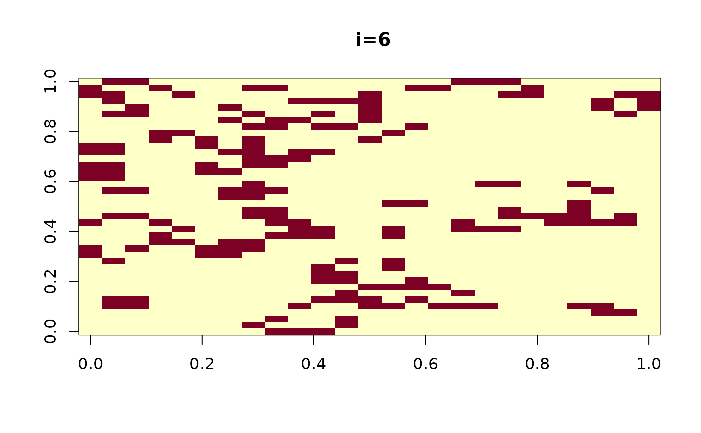


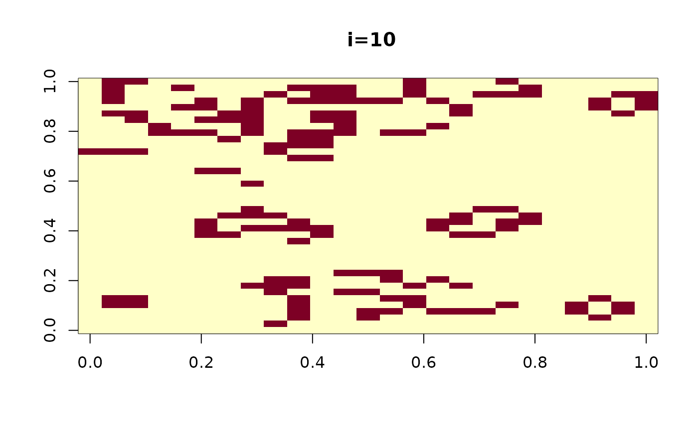

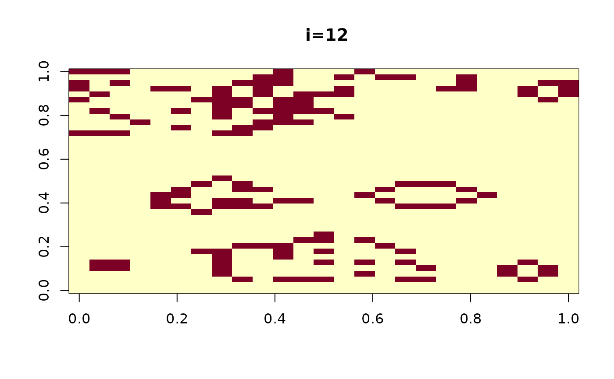


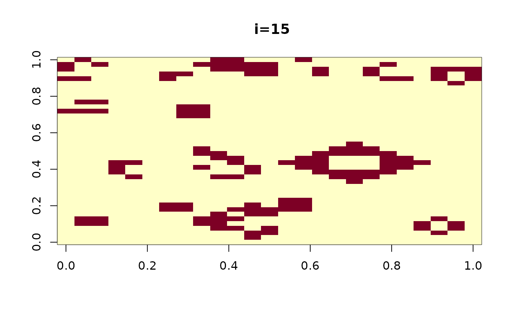
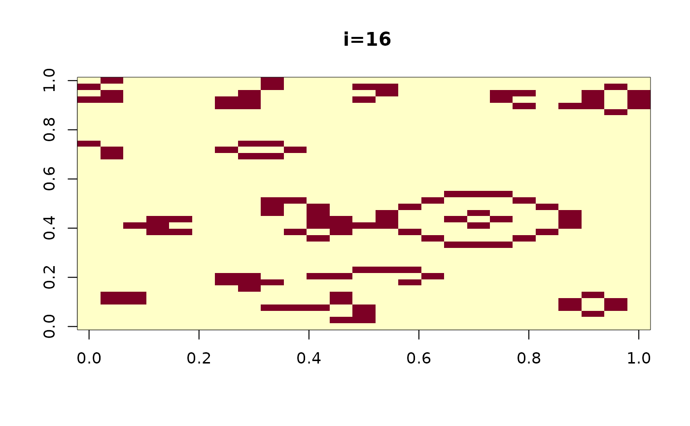
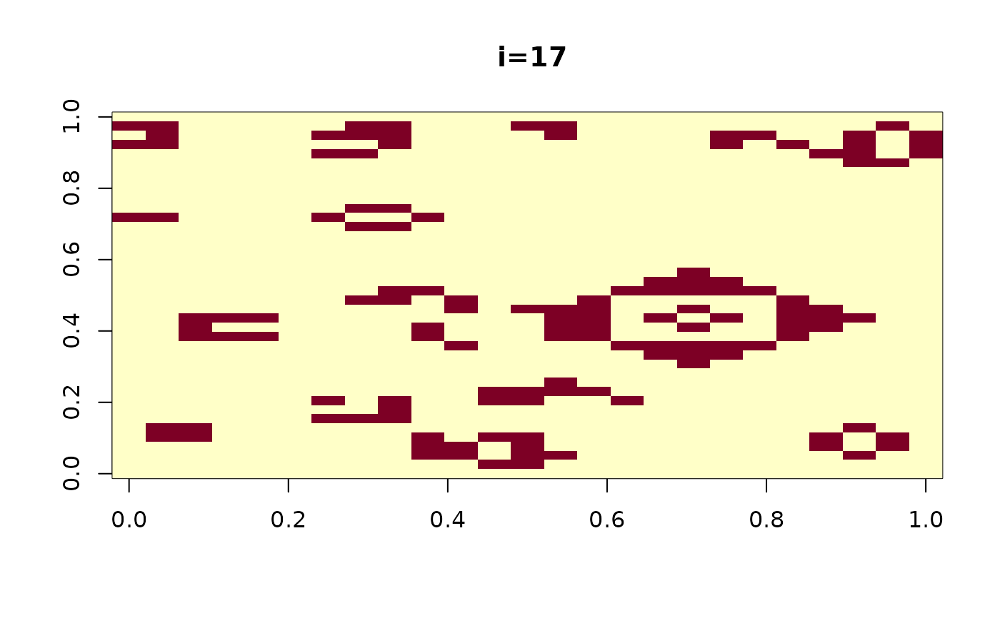
# }
## discrete version of logistic growth equation
## Note: function main returns the *new value*, not the derivative
dlogist <- new("odeModel",
main = function (time, init, parms, ...) {
x <- init
with(as.list(parms), {
x <- x + r * x * (1 - x / K) * DELTAT
# ^^^ add to old value ^^^^^^ special parameter with time step
list(c(x))
})
},
parms = c(r=0.1, K=10),
times = seq(0, 100, 1),
init = c(population=0.1),
solver = "iteration" #!!!
)
plot(sim(dlogist))
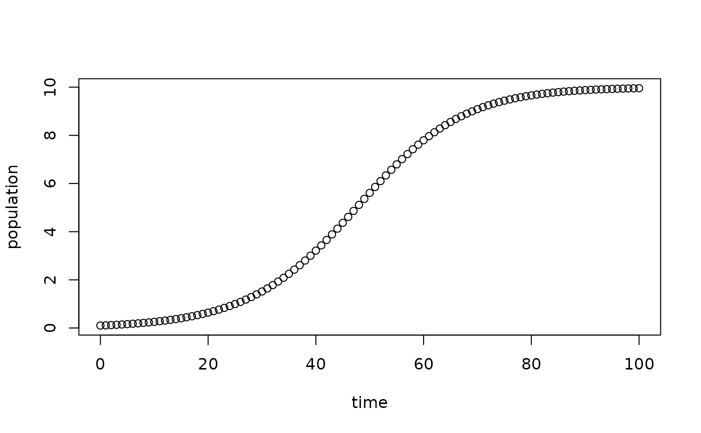
## alternative with function that returns the derivative
## discrete steps are realized with the euler method
dlogist <- new("odeModel",
main = function (time, init, parms, ...) {
x <- init
with(as.list(parms), {
x <- r * x * (1 - x / K)
list(c(x))
})
},
parms = c(r=0.1, K=10),
times = seq(0, 100, 1),
init = c(population=0.1),
solver = "euler"
)
plot(sim(dlogist))
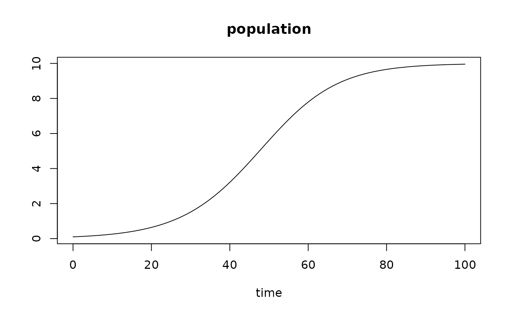
## second alternative: use of the "iteration" solver from
## package deSolve, that supports extended plotting functions
dlogist <- new("odeModel",
main = function (time, init, parms, ...) {
x <- init[1]
with(as.list(parms), {
x <- x + r * x * (1 - x / K)
# ^^^ add to old value
list(c(x))
})
},
parms = c(r=0.1, K=10),
times = seq(0, 100, 1),
init = c(population=0.1),
solver = function(y, times, func, parms, ...)
ode(y, times, func, parms, ..., method="iteration")
)
plot(sim(dlogist))